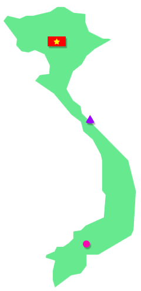
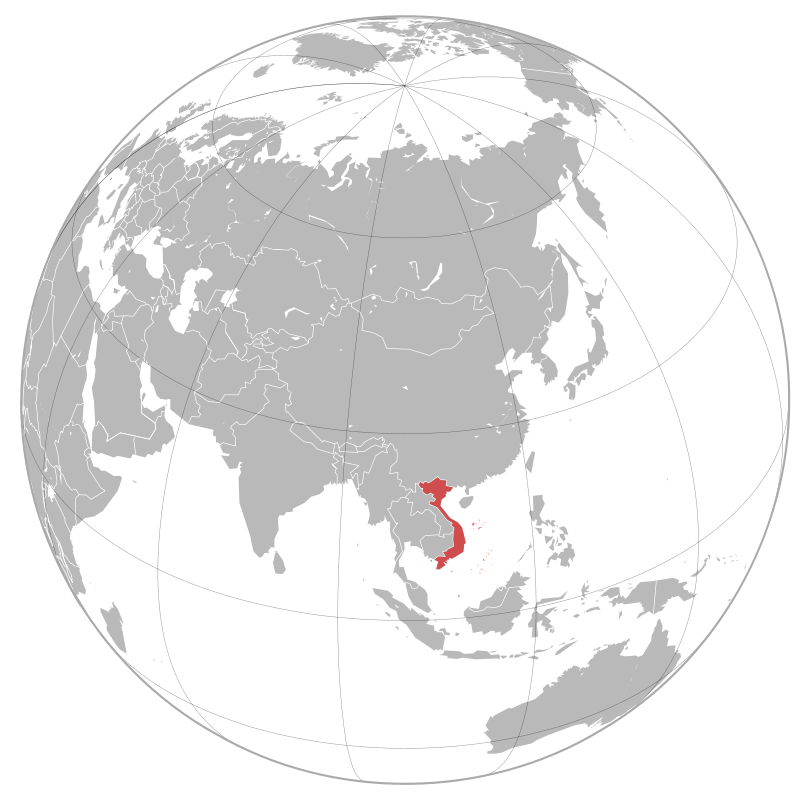
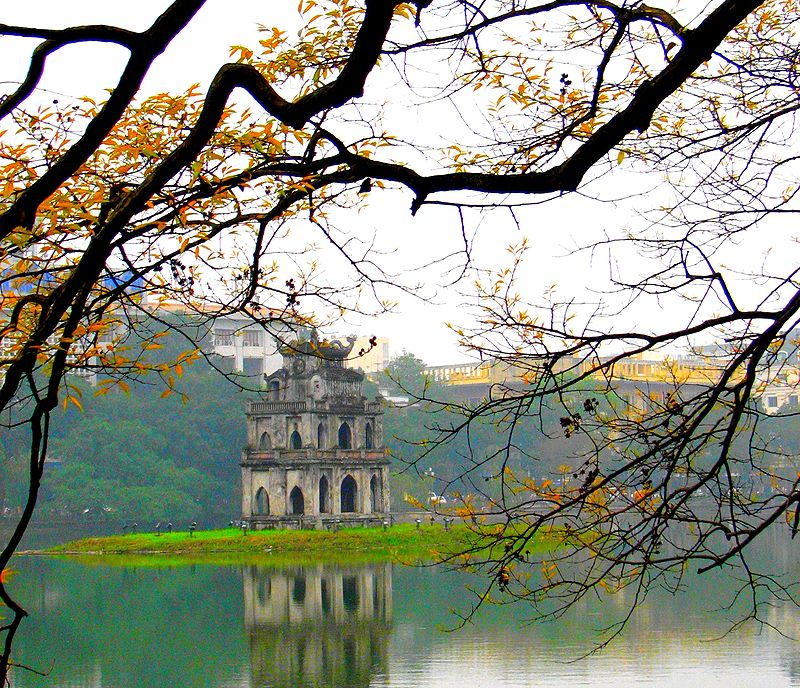
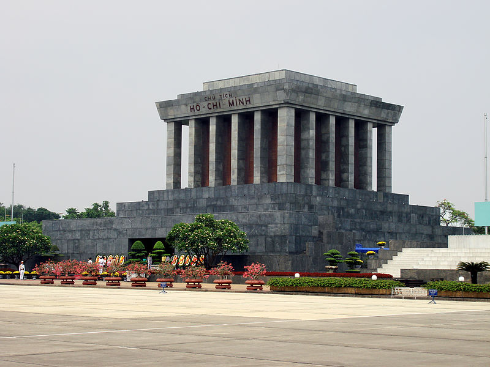
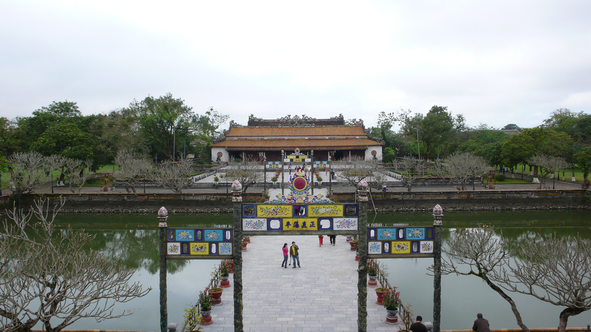
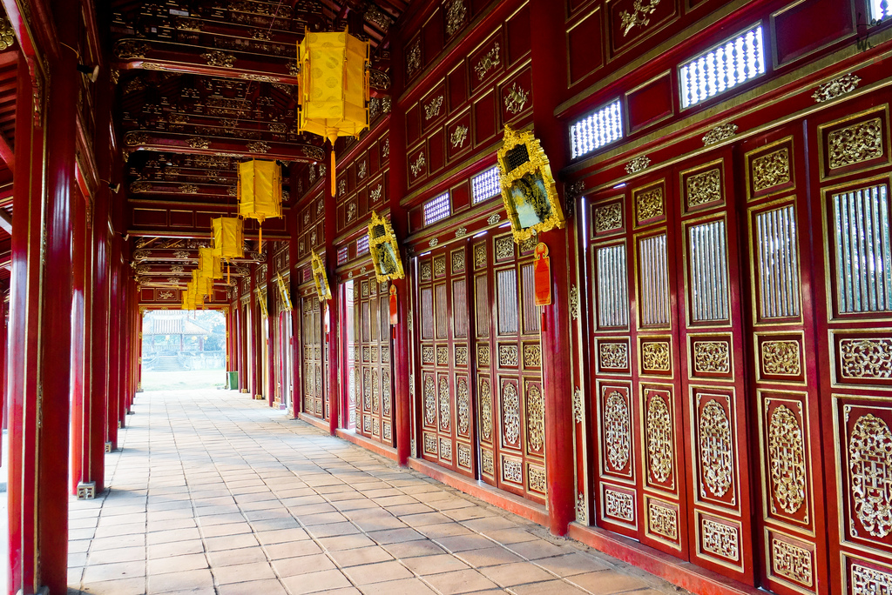
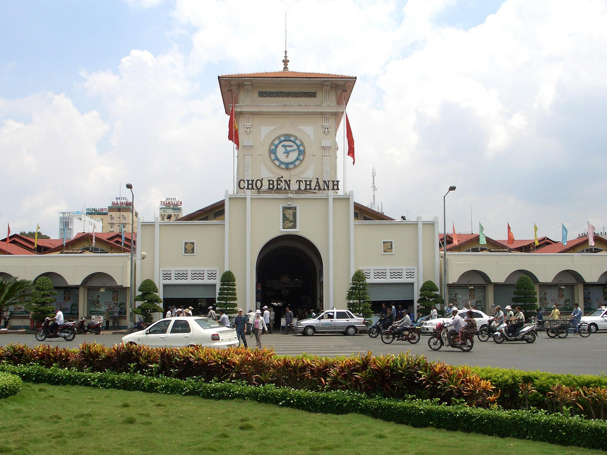

Cầu Tràng Tiền về đêm

Việt Nam, tên chính thức: Cộng hòa Xã hội Chủ nghĩa Việt Nam, là một quốc gia nằm ở phía đông bán đảo Đông Dương, thuộc khu vực Đông Nam Á. Việt Nam phía bắc giáp Trung Quốc, phía tây giáp Lào và Campuchia, phía tây nam giáp vịnh Thái Lan, phía đông và phía nam giáp biển Đông và có hơn 4.000 hòn đảo, bãi đá ngầm lớn nhỏ, gần và xa bờ, có vùng nội thủy, lãnh hải, vùng đặc quyền kinh tế và thềm lục địa được Chính phủ Việt Nam xác định gần gấp ba lần diện tích đất liền (khoảng trên 1 triệu Km²). Trên biển Đông có quần đảo Trường Sa và Hoàng Sa được Việt Nam tuyên bố chủ quyền nhưng vẫn đang bị tranh chấp với các quốc gia khác như Đài Loan, Trung Quốc, Malaysia và Philippines.
Sau khi Việt Nam Dân chủ Cộng hòa ở miền Bắc và Mặt trận dân tộc giải phóng miền Nam Việt Nam giành chiến thắng trước Việt Nam Cộng hòa ở miền Nam ngày 30 tháng 4 năm 1975, hai miền Bắc-Nam được thống nhất. Ngày 2 tháng 7 năm 1976 nước Việt Nam được đặt Quốc hiệu là Cộng hòa Xã hội Chủ nghĩa Việt Nam.

Việt Nam nằm trong bán đảo Đông Dương, thuộc vùng Đông Nam châu Á, Lãnh thổ Việt Nam chạy dọc bờ biển phía đông của bán đảo này. Việt Nam có biên giới đất liền với Trung Quốc (1.281 km), Lào (2.130 km) và Campuchia (1.228 km) và bờ biển dài 3.444 km tiếp giáp với vịnh Bắc Bộ, biển Đông và vịnh Thái Lan.Việt Nam có diện tích 331.698 km², bao gồm khoảng 327.480 km² đất liền và hơn 4.500 km² biển nội thủy, với hơn 2.800 hòn đảo, bãi đá ngầm lớn nhỏ, gần và xa bờ, bao gồm cả Trường Sa và Hoàng Sa mà Việt Nam tuyên bố chủ quyền, có vùng nội thủy, lãnh hải, vùng đặc quyền kinh tế và thềm lục địa được Chính phủ Việt Nam xác định gần gấp ba lần diện tích đất liền khoảng trên 1 triệu km².
Địa hình Việt Nam rất đa dạng theo các vùng từ nhiên như vùng tây bắc, đông bắc, Tây Nguyên có những đồi và những núi dày rừng, trong khi đất phẳng che phủ khoảng ít hơn 20%. Núi rừng chiếm độ 40%, đồi 40%, và độ che phủ khoảng 75%. Các vùng đồng bằng như đồng bằng Sông Hồng, đồng bằng sông Cửu Long và các vùng duyên hải ven biển như Bắc Trung Bộ và Nam Trung Bộ. Nhìn tổng thể Việt Nam gồm ba miền với miền Bắc có cao nguyên và vùng châu thổ sông Hồng, miền Trung là phần đất thấp ven biển, những cao nguyên theo dãy Trường Sơn, và miền Nam là vùng châu thổ Cửu Long. Điểm cao nhất Việt Nam là 3.143 mét, tại đỉnh Phan Xi Păng, thuộc dãy núi Hoàng Liên Sơn. Diện tích đất canh tác chiếm 17% tổng diện tích đất Việt Nam.
Việt Nam có khí hậu nhiệt đới xavan ở miền Nam với hai mùa (mùa mưa, từ giữa tháng 5 đến giữa tháng 9, và mùa khô, từ giữa tháng 10 đến giữa tháng 4) và khí hậu cận nhiệt đới ẩm ở miền Bắc với bốn mùa rõ rệt (mùa xuân, mùa hè, mùa thu và mùa đông), còn miền trung có đặc điểm của khí hậu nhiệt đới gió mùa. Do nằm dọc theo bờ biển, khí hậu Việt Nam được điều hòa một phần bởi các dòng biển và mang nhiều yếu tố khí hậu biển. Độ ẩm tương đối trung bình là 84% suốt năm. Hàng năm, lượng mưa từ 1.200 đến 3.000 mm, số giờ nắng khoảng 1.500 đến 3.000 giờ/năm và nhiệt độ từ 5 °C đến 37 °C. Hàng năm, Việt Nam luôn phải phòng chống bão và lụt lội với 5 đến 10 cơn bão/năm.
Về tài nguyên đất, Việt Nam có rừng tự nhiên và nhiều mỏ khoáng sản trên đất liền với phốt phát, than đá, măng gan, bô xít, chrômát,... Về tài nguyên biển có dầu mỏ, khí tự nhiên, quặng khoáng sản ngoài khơi. Với hệ thống sông dốc đổ từ các cao nguyên phía tây, Việt Nam có nhiều tiềm năng về phát triển thủy điện.

Hà Nội là thủ đô của nước Việt Nam từ năm 1976 đến nay, và là thủ đô của nước Việt Nam Dân chủ Cộng hòa từ năm 1946, là thành phố lớn nhất Việt Nam về diện tích với 3328,9 km2, đồng thời cũng là địa phương đứng thứ nhì về dân số với 6.699.600 người (2011). Hiện nay, thủ đô Hà Nội và thành phố Hồ Chí Minh là đô thị loại đặc biệt của Việt Nam. Hà Nội nằm giữa đồng bằng sông Hồng trù phú, nơi đây đã sớm trở thành một trung tâm chính trị và tôn giáo ngay từ những buổi đầu của lịch sử Việt Nam. Năm 1010, Lý Công Uẩn, vị vua đầu tiên của nhà Lý, quyết định xây dựng kinh đô mới ở vùng đất này với cái tên Thăng Long. Trong suốt thời kỳ của các triều đại Lý, Trần, Lê, Mạc, kinh thành Thăng Long là nơi buôn bán, trung tâm văn hóa, giáo dục của cả miền Bắc. Khí Tây Sơn rồi nhà Nguyễn lên nắm quyền trị vì, kinh đô được chuyển về Huế và Thăng Long bắt đầu mang tên Hà Nội từ năm 1831, dưới thời vua Minh Mạng. Năm 1882, Hà Nội trở thành thủ đô của Liên bang Đông Dương và được người Pháp xây dựng, quy hoạch lại. Trải qua hai cuộc chiến tranh, Hà Nội là thủ đô của miền Bắc rồi nước Việt Nam thống nhất và giữ vai trò này cho tới ngày nay.

Cách đây khoảng 6 thế kỷ, dựa theo bản đồ đời Hồng Đức thì phần lớn xung quanh kinh thành khi ấy là nước. Hồ Hoàn Kiếm là một phần lưu sông Hồng chảy qua vị trí của các phố ngày nay như Hàng Đào, Hai Bà Trưng, Lý Thường Kiệt, Hàng Chuối. Tiếp đó do ra nhánh chính của sông Hồng. Mới rộng nhất phần lưu này hình thành nên hồ Hoàn Kiếm hiện nay.Thời Lê Trung hưng (thế kỷ 16), khi chúa Trịnh cho chỉnh trang hoàng thành Thăng Long để vua Lê ở đã đồng thời xây dựng phủ chúa riêng nằm ngay bên ngoài hoàng thành và trở thành một cơ quan trung ương thời bấy giờ với những công trình kiến trúc va hoa như lầu Ngũ Long (dùng để duyệt quân) nằm ở bờ Đông hồ Hoàn Kiếm, đỉnh Tà Vọng trên đảo Ngọc Sơn. Năm 1728 Trịnh Giang cho đào hào ở vị trí phía Nam hồ để xây dựng cung điện ngầm gọi là Thưởng Trì cung.
Chùa Trinh cho ngăn hồ lớn thành hồ Tả Vọng và Hữu Vọng. Hồ Hữu Vọng được dùng làm nơi duyệt quân thủy chiến của triều đình. Đến đời Tự Đức (1847-1883), hồ Hữu Vọng được gọi là hồ Thủy Quân, còn hồ Tả Vọng chính là hồ Hoàn Kiếm. Từ năm 1884, nhà nước bảo hộ Pháp cho lấp hồ Thủy Quân để xây dựng, mở mang Hà Nội.
Lăng Chủ tịch Hồ Chí Minh, hay còn gọi là Lăng Hồ Chủ tịch, Lăng Bác, là nơi đặt thi hài của chủ tịch Hồ Chí Minh. Lăng Chủ tịch Hồ Chí Minh được chính thức khởi công ngày 2 tháng 9 năm 1973, tại vị trí của lễ đài cũ giữa Quảng trường Ba Đình, nơi ông đã từng chủ trì các cuộc mít tinh lớn.
Lăng được khánh thành vào ngày 29 tháng 8 năm 1975. Lăng gồm 3 lớp với chiều cao 21,6 mét, lớp dưới tạo dáng bậc thềm tam cấp, lớp giữa là kết cấu trung tâm của lăng gồm phòng thi hài và những hành lang, những cầu thang lên xuống. Quanh bốn mặt là những hàng cột vuông bằng đá hoa cương, lớp trên cùng là mái lăng hình tam cấp. Ở mặt chính có dòng chữ: "Chủ tịch Hồ Chí Minh" bằng đá hồng màu mận chín. Trong di chúc, Hồ Chí Minh muốn được hỏa táng và đặt tro tại ba miền đất nước. Tuy nhiên, Bộ Chính trị Ban Chấp hành Trung ương Đảng Cộng sản Việt Nam khóa III, với lý do "theo nguyện vọng và tình cảm của nhân dân", quyết định giữ gìn lâu dài thi hài Hồ Chí Minh để sau này người dân cả nước, nhất là người dân miền Nam, khách quốc tế có thể tới viếng.
Huế nằm ở dải đất hẹp của miền Trung Việt Nam và là thành phố tỉnh lỵ của Thừa Thiên Huế. Thành phố là trung tâm về nhiều mặt của miền Trung như văn hóa, chính trị, giáo dục, du lịch... Với dòng sông Hương và những di sản để lại của triều đại phong kiến, Huế, còn gọi là đất Thần Kinh hay xứ thơ, là một trong những thành phố được nhắc tới nhiều trong thơ văn và âm nhạc Việt Nam. Thành phố có hai di sản được UNESCO ở Việt Nam. Huế là đô thị cấp quốc gia của Việt Nam và có cố đô của Việt Nam thời phong kiến dưới triều nhà Nguyễn (1802 - 1945).
Cầu Tràng Tiền về đêm
Thuận Hóa - Phú Xuân - Huế có một quá trình lịch sử hình thành và phát triển khoảng gần 7 thế kỷ (tính từ năm 1306). Trong khoảng thời gian khá dài ấy Huế đã tích hợp được những giá trị vật chất và tinh thần quý báu để tạo nên một truyền thống văn hóa Huế. Truyền thống ấy vừa mang tính đặc thù - bản sắc của một vùng đất, không tách rời những đặc điểm chung của truyền thống văn hóa dân tộc Việt Nam; trong tiến trình hình thành văn hóa Huế có sự tác động của văn hóa Đông Sơn do các lớp cư dân cổ phía Bắc mang vào trước thế kỷ 2 và sau thế kỷ 13 hỗn dung với thành phần văn hóa Sa Huỳnhtạo nên nền văn hóa Huế - Chăm. Trong quá trình phát triển, chuyển biến còn chịu ảnh hưởng của các luồng văn hóa khác các nước trong khu vực Đông Nam Á, Trung Quốc, Ấn Độ, phương Tây...

Văn hóa Huế được tạo nên bởi sự đặc sắc về tinh thần, đa dạng về loại hình, phong phú về đặc trưng với nét được thể hiện rất phong phú trên nhiều lĩnh vực như: văn học, âm nhạc, sân khấu, mỹ thuật, phong tục tập quán, lễ hội, lề lối ứng xử, ăn - mặc - ở, phong cách giao tiếp, phong cách sống...Kiến trúc ở Huế phong phú và đa dạng: có kiến trúc cung đình và kiến trúc dân gian, kiến trúc tôn giáo và kiến trúc đền miếu, kiến trúc truyền thống và kiến trúc hiện đại... những công trình kiến trúc cổ công phu, đồ sộ nhất chính là Quần thể di tích Cố đô Huế hay Quần thể di tích Huế. Đó là những di tích lịch sử - văn hóa do triều Nguyễn chủ trương xây dựng trong khoảng thời gian từ đầu thế kỷ 19 đến nửa đầu thế kỷ 20 trên địa bàn kinh đô Huế xưa; nay thuộc phạm vi thành phố Huế và một vài vùng phụ cận thuộc tỉnh Thừa Thiên-Huế, Việt Nam.
Bắt nguồn từ 8 loại lễ nhạc cung đình thời Lê là giao nhạc, miếu nhạc, ngũ tự nhạc, cửu nhật nguyệt giao trung nhạc, đại triều nhạc, thường triều nhạc, đại yến cửu tấu nhạc, cung trung nhạc, đến triều Nguyễn lễ nhạc cung đình Việt Nam đã phát triển thành hai loại hình đại nhạc và nhã nhạc (tiểu nhạc) với một hệ thống các bài bản lớn.
Ca Huế có 15 làn điệu lớn, từ múa lân, múa tứ linh, múa cung, tiểu sử, múa yên tiệc, múa trình diễn tích tuồng. Nhiều vũ điệu có tính hoành tráng, quy mô diễn viên đông, phô diễn được vẻ đẹp rộn ràng, lấp lánh và kỳ thuật, kỹ xảo của múa hát cung đình Việt Nam thể hiện được sự phát triển nâng cao múa hát cổ truyền của người Việt.
Ca Huế là một hệ thống bài bản phong phú gồm khoảng 60 tác phẩm thanh nhạc và khí nhạc theo hai điệu thức lớn là điệu Bắc, điệu Nam và một hệ thống "hơi" diễn tả nhiều sắc thái tình cảm đặc trưng. Điệu Bắc gồm những bài ca mang âm hưởng vui tươi, trang trọng. Điệu Nam là những bài ca điệu buồn, ai non, ai oán. Bài bản Ca Huế có cấu trúc chặt chẽ, nghiêm ngặt, trải qua quá trình phát triển lâu dài đã trở thành nhạc cổ điển hoàn chỉnh, mang nhiều yếu tố "chuyên nghiệp", bác học về câu trúc, ca từ và phong cách biểu diễn. Di sản ca Huế là dân nhạc Huế với bộ ngũ tuyệt Tranh, Tỳ, Nhị, Nguyệt, Tam, xen với Bầu, Sáo và bộ gõ trống Huế, sanh loan, sanh tiền.
Kỹ thuật đàn và hát ca Huế đặc biệt tinh tế nhưng ca Huế lại mang đậm sắc thái địa phương, phát sinh từ tiếng nói, giọng nói của người Huế nên gần gũi với Hò Huế, Lý Huế; là chiếc cầu nối giữa nhạc cung đình và âm nhạc dân gian.

Phát triển sớm từ thế kỷ 17 dưới thời các chúa Nguyễn. Bên triều Nguyễn, tuồng được xem là quốc kịch và triều đình Huế đã tạo điều kiện thuận lợi cho tuồng phát triển. Trong Đại Nội Huế có nhà hát Duyệt Thị Đường, Tĩnh Quang viện, Thông Minh Đường. Tại Khiêm Lăng, có Minh Khiêm Đường. Thói hình Hàng để thành lập Thanh Bình thự làm nơi dạy diễn viên tuồng. Thời thịnh tụ Bắc đã thành lập Ban Hiệp Thự chuyên nhuận sắc, chỉnh lý, hiệu đính và sáng tác tuồng.Với những kiệt tác điêu khắc trang trí bắt nguồn từ những mẫu mực của Trung Hoa, các nghệ nhân Việt Nam đã tạo nên một bản sắc nghệ thuật trang trí với những nét độc đáo mang cá tính Huế. Nghệ thuật trang trí mỹ thuật Huế còn tiếp thu những tinh hoa của nghệ thuật Chăm, đặc biệt là tiếp thu nghệ thuật trang trí Tây phương. Trang trí cung đình Huế còn ảnh hưởng của các luồng văn hóa khác các nước trong khu vực Đông Nam Á, Trung Quốc, Ấn Độ, phương Tây. Trang trí cung đình Huế còn tiếp thu nghệ thuật dân gian Việt Nam. Nhiều loại hình thủ công mỹ nghệ truyền thống cũng có những nét độc đáo riêng, từ đồ đồng, pháp lam, kim hoàn, thêu, làm nón, sơn thếp vàng, chạm khắc xương và ngọc ngà, khảm sành sứ, làm vàng bạc, dệt, thêu... đã được các tượng cục các triều Nguyễn nâng lên thành những nghệ thuật tinh xảo, sang trọng. Về hội họa nhiều họa sĩ nổi tiếng về tranh thủy mặc sơn thủy, tranh lụa, tranh gương, các ấn phẩm nhất thi nhất họa đặc sắc, đặc biệt, tuồng Huế xuất hiện người họa sĩ vẽ tranh sơn dầu đầu tiên ở Việt Nam là họa sĩ Lê Văn Miến [34] (1870-1912)... Về điêu khắc, có đồ đá đã đánh dấu một thời kỳ phát triển nhất, thể hiện bằng các tác phẩm điêu khắc trên đá, trên đồng, trên gỗ. Trong điêu khắc gỗ, phần khắc chạm gỗ trang trí với những góc chạm nổi, chạm lộng trên các chi tiết công trình kiến trúc đạt đến sự tinh xảo và có tính thẩm mỹ cao. Về mỹ thuật ứng dụng, ngoài việc nâng cao các loại hình thủ công mỹ nghệ truyền thống của Việt Nam, Huế còn một thời sản xuất đồ mỹ nghệ pháp lam cao cấp.
 Thành phố Hồ Chí Minh (hiện nay vẫn được gọi phổ
biến với tên cũ là Sài Gòn) là thành phố đông dân nhất, đồng thời cũng là trung tâm kinh tế, văn hóa, giáo dục quan trọng của
Việt Nam. Trên cơ sở diện tích tự nhiên, thì thành phố Hồ Chí Minh là đô thị lớn thứ nhì Việt Nam (sau thủ đô Hà Nội được mở
rộng). Nếu xét về quy mô dân số, thì thành phố Hồ Chí Minh là đô thị lớn nhất Việt Nam. Hiện nay, thành phố Hồ Chí Minh cùng với
thủ đô Hà Nội là đô thị loại đặc biệt của Việt Nam.
Thành phố Hồ Chí Minh (hiện nay vẫn được gọi phổ
biến với tên cũ là Sài Gòn) là thành phố đông dân nhất, đồng thời cũng là trung tâm kinh tế, văn hóa, giáo dục quan trọng của
Việt Nam. Trên cơ sở diện tích tự nhiên, thì thành phố Hồ Chí Minh là đô thị lớn thứ nhì Việt Nam (sau thủ đô Hà Nội được mở
rộng). Nếu xét về quy mô dân số, thì thành phố Hồ Chí Minh là đô thị lớn nhất Việt Nam. Hiện nay, thành phố Hồ Chí Minh cùng với
thủ đô Hà Nội là đô thị loại đặc biệt của Việt Nam.
Vùng đất này ban đầu được gọi là Prey Nokor, thành phố sau đó hình thành nhờ công cuộc khai phá miền Nam của nhà Nguyễn. Năm 1698, Nguyễn Hữu Cảnh cho lập phủ Gia Định, đánh dấu sự ra đời thành phố. Khi người Pháp vào Đông Dương, để phục vụ công cuộc khai thác thuộc địa, thành phố Sài Gòn được thành lập và nhanh chóng phát triển, trở thành một trong hai đô thị quan trọng nhất Việt Nam, được mệnh danh Hòn ngọc Viễn Đông hay Paris Phương Đông. Sài Gòn là thủ đô của Liên bang Đông Dương giai đoạn 1887-1901. Năm 1949, Sài Gòn trở thành thủ đô của Quốc gia Việt Nam và sau này là Việt Nam Cộng hòa. Kể từ đó, thành phố hoa lệ này trở thành một trong những đô thị quan trọng của vùng Đông Nam Á. Sau khi Việt Nam Cộng hòa sụp đổ trong sự kiện 30 tháng 4 năm 1975, lãnh thổ Việt Nam được hoàn toàn thống nhất. Ngày 2 tháng 7 năm 1976, Quốc hội nước Việt Nam thống nhất quyết định đổi tên Sài Gòn thành "Thành phố Hồ Chí Minh", theo tên vị Chủ tịch nước đầu tiên của nước Việt Nam Dân chủ Cộng hòa.

Nằm trong vùng chuyển tiếp giữa miền Đông Nam Bộ và Tây Nam Bộ, Thành phố Hồ Chí Minh ngày nay bao gồm 19 quận và 5 huyện, tổng diện tích 2.095,06 km². Theo kết quả điều tra dân số chính thức vào thời điểm 0 giờ ngày 1 tháng 4 năm 2009 thì dân số thành phố là 7.162.864 người (chiếm 8,34% dân số Việt Nam), mật độ trung bình 3.419 người/km². Đến năm 2011 dân số thành phố tăng lên 7.521.138 người. Đến thời điểm 0 giờ ngày 1/4/2014 thì dân số thành phố đạt 7.955.000 người. Tuy nhiên nếu tính những người cư trú không đăng ký thì dân số thực tế của thành phố vượt trên 10 triệu người. Giữ vai trò quan trọng trong nền kinh tế Việt Nam, Thành phố Hồ Chí Minh chiếm 21,3% tổng sản phẩm (GDP) và 29,38% tổng thu ngân sách của cả nước. Nhờ điều kiện tự nhiên thuận lợi, Thành phố Hồ Chí Minh trở thành một đầu mối giao thông quan trọng của Việt Nam và Đông Nam Á, bao gồm cả đường bộ, đường sắt, đường thủy và đường không. Vào năm 2007, thành phố đón khoảng 3 triệu khách du lịch quốc tế, tức 70% lượng khách vào Việt Nam. Các lĩnh vực giáo dục, truyền thông, thể thao, giải trí, tại Thành phố Hồ Chí Minh đều giữ vai trò quan trọng bậc nhất.Tuy vậy, Thành phố Hồ Chí Minh đang phải đối mặt với những vấn đề của một đô thị lớn có dân số tăng quá nhanh. Trong nội ô thành phố, đường sá trở nên quá tải, thường xuyên ùn tắc. Hệ thống giao thông công cộng kém hiệu quả. Môi trường thành phố cũng đang bị ô nhiễm do phương tiện giao thông, các công trường xây dựng và công nghiệp sản xuất.